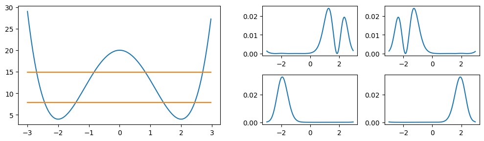
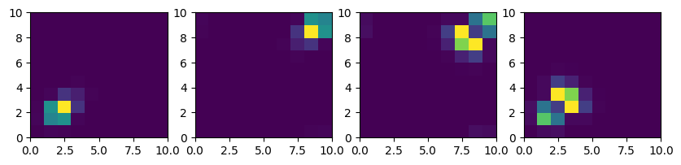

This notebook can be found on github
N-Particles in a double-well potential
In this example we will first solve the problem of a single particle in a double well potential. We then will assume that the particle is always trapped in one of the low energy states. This allows us to reduce the Hilbert space of the system to these states only. Using this reduced Hilbert space we will investigate the case of N indistinguishable particles in such a system. Finally we will add particle-particle interaction to obtain a more interesting problem.
using QuantumOpticsusing PyPlotOne particle in a double-well
First we choose a basis for a single particle, specify the double-well potential and calculate the Hamiltonian.
xmin = -3xmax = 3Nsteps = 200L = xmax - xminm = 0.5E0 = 20b_position = PositionBasis(xmin, xmax, Nsteps)xpoints = samplepoints(b_position)x = position(b_position)p = momentum(b_position)potential = x -> E0 + x^4 - 8*x^2V = potentialoperator(b_position, potential)Hkin = p^2/2mH = Hkin + dense(V)We find the lowest energy eigenstates, where instead of $H$ we diagonalize $(H + H^\dagger)/2$ to make it truly Hermitian (due to numerical errors, the operator $p^2$ is not Hermitian, even though we know it has to be).
E, states = eigenstates((H + dagger(H))/2, 4);println(E)[7.7857566912546545, 7.922554575913559, 14.544347041747308, 15.22423354096913]which pairwise have nearly identical energies. The corresponding states can be illustrated by plotting their respective probability distributions.
figure(figsize=(5, 3))subplot(2, 2, 1)plot(xpoints, abs2.(states[1].data))subplot(2, 2, 2)plot(xpoints, abs2.(states[2].data))subplot(2, 2, 3)plot(xpoints, abs2.(states[3].data))subplot(2, 2, 4)plot(xpoints, abs2.(states[4].data))tight_layout()
It turns out that combining them results in much nicer localized states. We plot them corresponding to their energies (orange bands in the potential on the left).
localizedstates = Ket[(states[1] - states[2])/sqrt(2), (states[1] + states[2])/sqrt(2), (states[3] - states[4])/sqrt(2), (states[3] + states[4])/sqrt(2)]figure(figsize=(10, 3))subplot(1, 2, 1)plot(xpoints, potential.(xpoints))for state in localizedstates E1 = abs.(expect(H, state)) plot(xpoints[[1,end]], [E1, E1], "C1")endsubplot(2, 4, 7)plot(xpoints, abs2.(localizedstates[1].data))subplot(2, 4, 8)plot(xpoints, abs2.(localizedstates[2].data))subplot(2, 4, 3)plot(xpoints, abs2.(localizedstates[3].data))subplot(2, 4, 4)plot(xpoints, abs2.(localizedstates[4].data));tight_layout()
Low energy subspace
We now assume that the energy in the system is always so low that it never reaches states besides the lowest four. This makes it possible to restrict the Hilbert space to the subspace generated by just these states. To specify the basis of this subspace one can use the SubspaceBasis. It needs to know the basis of the enveloping Hilbert space $\mathcal{H}$ and the states $|u_i\rangle$, which are defined in $\mathcal{H}$, that form the basis of this subspace.
b_sub = SubspaceBasis(b_position, localizedstates)println("dim(subspace): ", length(b_sub))dim(subspace): 4Projectors can be used to convert states and operators from the superbasis to the subspace basis and vice versa. As the name already indicates, states that are not in the subspace are projected into it and then a basis change is performed.
P = projector(b_sub, b_position)Pt = dagger(P)x_sub = P*x*PtHkin_sub = P*Hkin*PtV_sub = P*V*PtH_sub = P*H*Pt;println("dim(H_sub): ", length(H_sub.basis_l), "x", length(H_sub.basis_r))dim(H_sub): 4
x4As example we can simulate the time evolution of the system in this subspace. Initially we put the particle into the ground state of the left well. Over time it starts oscillating between the left and right well ground states.
T = [0:0.1:23;]psi0_sub = basisstate(b_sub, 1)tout, psi_t = timeevolution.schroedinger(T, psi0_sub, H_sub)figure(figsize=[10, 3])subplot(1, 2, 1)plot(tout, [abs2.(psi.data[1]) for psi in psi_t])plot(tout, [abs2.(psi.data[2]) for psi in psi_t])subplot(1, 2, 2)# Plot particle probablity distribution in the super Hilbert space.for i=1:10:length(T) plot(xpoints, abs2.((Pt*psi_t[i]).data), "k", alpha=0.6*(T[i]/T[end])^4+0.2)endplot(xpoints, abs2.((Pt*psi_t[1]).data), "C0", label="Initial state")plot(xpoints, abs2.((Pt*psi_t[end]).data), "C1", label="Final state")legend()
Many-body system
Starting with this subspace basis consisting of the four lowest trapped states we build up the corresponding many-body basis. Instead of asking the question in which state a single particle is, we want to know how many particles are in each of these four levels. To define the many-body basis one simply has to specify the associated one-body basis and select the desired many-body states. For example if we have a system consisting of two fermions we could generate the relevant occupation states with the fermionstates() function:
states = fermionstates(b_sub, 2)for i in 1:length(states) println("$i: ", states[i])end1:
[1, 1, 0, 0]
2: [1, 0, 1, 0]
3: [1, 0, 0, 1]
4: [0, 1, 1, 0]
5: [0, 1, 0, 1]
6: [0, 0, 1, 1]However, in this case we want two bosons, which can be achieved with the bosonstates() function.
Nparticles = 2b_mb = ManyBodyBasis(b_sub, bosonstates(b_sub, Nparticles))Calculating the many-body operators from the corresponding operators in the associated one-body subspace basis is straight forward using the manybodyoperator() function. Basically it uses the relation
\[ \tilde{A} = \sum_{st} c_s^\dagger c_t \langle u_s| A |u_t \rangle \]
to convert the one-body operator $A$ to the many-body operator $\tilde{A}$.
Hkin_mb = manybodyoperator(b_mb, Hkin_sub)V_mb = manybodyoperator(b_mb, V_sub)H_mb = manybodyoperator(b_mb, H_sub)To measure the number of particles in a specific state one has two possibilities. In the one-body subspace basis this would correspond to the operator $|u_i\rangle\langle u_i|$.
n1_sub = basisstate(b_sub, 1) ⊗ dagger(basisstate(b_sub, 1))n1_mb = manybodyoperator(b_mb, sparse(n1_sub))Alternatively, one can use the number() function.
n1_mb = number(b_mb, 1)n2_mb = number(b_mb, 2)n3_mb = number(b_mb, 3)n4_mb = number(b_mb, 4)As example we will now simulate the time evolution of this many-body system. Since the particles aren't interacting in any way, the result is, besides a factor two, identical to the single-body case. Initially both particles are in the ground state of the left well.
psi0_mb = basisstate(b_mb, [2, 0, 0, 0])tout, psi_t_mb = timeevolution.schroedinger(T, psi0_mb, H_mb)To obtain the particle density in the position basis one has to be a little bit creative. The important observation is that the probability density at the point $x_i$ can be calculated by $n(x_i) = \langle \Psi| X_i |\Psi\rangle$ where $X_i = |x_i\rangle \langle x_i|$. By first projecting the operator $X_i$ into the one-body subspace and then transforming this operator into its many-body equivalent we can calculate the particle probability density as expectation value of this many-body operator.
"""Sparse operator |x_i><x_i| in position basis."""function nx(b::PositionBasis, i) op = SparseOperator(b) op.data[i, i] = 1. opend"""Probability density in the position basis of the given many body state."""function probabilitydensity_x(state) n = Vector{Float64}(undef, length(b_position)) for i=1:length(b_position) nx_i = nx(b_position, i) nx_i_sub = P*nx_i*Pt nx_i_mb = manybodyoperator(b_mb, nx_i_sub) n[i] = real(expect(nx_i_mb, state)) end nendThis allows us to reproduce the one-body results.
figure(figsize=[10, 3])subplot(1, 2, 1)plot(tout, real(expect(n1_mb, psi_t_mb)))plot(tout, real(expect(n2_mb, psi_t_mb)))subplot(1, 2, 2)T_ = tout[tout.<23]plot(xpoints, real(probabilitydensity_x(psi_t_mb[1])), label="Initial state")plot(xpoints, real(probabilitydensity_x(psi_t_mb[length(T_)])), label="Final state")legend()
Many-body system with particle-particle interaction
In principle it is possible to include arbitrary particle-particle interactions. The only limitations is that the dimension of the interaction operator might get too large. In this case we will use a Coulomb interaction between the particles. Defining it in the position basis is straight forward. Note that we cheated a little bit to avoid infinitely high interaction when both particles are at the same position.
using LinearAlgebrab2_position = b_position ⊗ b_positionx1 = embed(b2_position, 1, x)x2 = embed(b2_position, 2, x);r = x1 - x2d = abs.(diag(r.data)).^-1d[d.==Inf] .= d[2]data = sparse(diagm(0 => d))H_coulomb = SparseOperator(b2_position, b2_position, data)As before we then project this interaction operator into the chosen subspace.
H_coulomb_sub = (P⊗P)*H_coulomb*(Pt⊗Pt)The manybodyoperator() function automatically detects that this is a two-particle interaction operator and uses the relation
\[ \tilde{A} = \sum_{stkl} c_s^\dagger c_k^\dagger c_t c_l \langle u_s | \langle u_k| A |u_t \rangle |i_l \rangle \]
to calculate the corresponding many-body operator.
H_coulomb_mb = manybodyoperator(b_mb, H_coulomb_sub)We will now calculate the lowest eigenstates for the case of attrictive and for the case of repulsive interaction.
H1 = H_mb - H_coulomb_mbH2 = H_mb + H_coulomb_mbE_coulomb_attractive, states_coulomb_attractive = eigenstates((H1+dagger(H1))/2)E_coulomb_repulsive, states_coulomb_repulsive = eigenstates((H2+dagger(H2))/2)It is interesting to see how the particle-particle correlation looks. For this the same approach as before for the probability density can be used. In the position basis this correlation can be calculated as expectation value of the two-particle operator $X_1 \otimes X_2 = |x_1 x_2\rangle\langle x_1 x_2|$. However, since this turns out to be rather slow at the moment (further improvements are definitively possible), we will only evaluate this correlation function at a limited set of points.
"""Probability density in the position basis of the given many body state."""function probabilitydensity_x1x2(state, indices) P2 = P ⊗ P P2t = dagger(P2) n = Matrix{Float64}(undef, length(indices), length(indices)) for i=1:length(indices) nx_i_sub = P*nx(b_position, indices[i])*Pt for j=1:length(indices) nx_j_sub = P*nx(b_position, indices[j])*Pt nx_ij_sub = nx_i_sub ⊗ nx_j_sub nx_ij_mb = manybodyoperator(b_mb, nx_ij_sub) n[i, j] = real(expect(nx_ij_mb, state)) end end nendLet's first investigate the case of attractive interaction. Looking at the energy spectrum we see that the lowest energies always come as pairs.
println(abs.(E_coulomb_attractive)[1:4])[2.4791501524793116, 2.503856434198644, 11.680386858765042, 11.704981056982698]It turns out that superpositions of these pairs results are much nicer localized states. Unsurprisingly, for the case of attractive interaction the particles tend to stay in the same positions. (For a nicer representation of the particle correlation increase the number of included points and wait...).
indices = [1:20:length(b_position);]n_attractive1 = probabilitydensity_x1x2(states_coulomb_attractive[1] + states_coulomb_attractive[2], indices)n_attractive2 = probabilitydensity_x1x2(states_coulomb_attractive[1] - states_coulomb_attractive[2], indices)n_attractive3 = probabilitydensity_x1x2(states_coulomb_attractive[3] + states_coulomb_attractive[4], indices)n_attractive4 = probabilitydensity_x1x2(states_coulomb_attractive[3] - states_coulomb_attractive[4], indices)figure(figsize=[10,2])subplot(1, 4, 1)pcolor(n_attractive1)subplot(1, 4, 2)pcolor(n_attractive2)subplot(1, 4, 3)pcolor(n_attractive3)subplot(1, 4, 4)pcolor(n_attractive4)
The energy spectrum for the case of repulsive interaction is a little bit different. There exists a single, energywise nicely separated groundstate. The second and third as well as the fourth ond fifth states again form pairs with degenerate energies.
println(abs.(E_coulomb_repulsive)[1:5])[16.2501347647596, 23.25441029019177, 23.330807558329774, 26.24829318565606, 26.288571073200814]But also in this case there are no surprises - for repulsive interaction the particles tend to stay in separated wells.
indices = [1:20:length(b_position);]n_repulsive1 = probabilitydensity_x1x2(states_coulomb_repulsive[1], indices)n_repulsive2 = probabilitydensity_x1x2(states_coulomb_repulsive[2], indices)n_repulsive3 = probabilitydensity_x1x2(states_coulomb_repulsive[3], indices)figure(figsize=[10,3])subplot(1, 3, 1)pcolor(n_repulsive1)subplot(1, 3, 2)pcolor(n_repulsive2)subplot(1, 3, 3)pcolor(n_repulsive3);